Three body simulation with initialization using the CAD tools.
Since version 2.
------------------------------------------------------------------------
See also Build3DSC and TreeBldCAD., DrawSC, TreeDraw, TimeGUI, Mag,
RK4, TreeH, TreeInit, TreePlot
------------------------------------------------------------------------
Contents
Parameters
lambda1 = [0;0;0];
lambda2 = [1;0;0];
lambda3 = [0;0;1];
r1 = [0;0;0];
r2 = [0;0;0.5];
r3 = [0;0;0];
m1 = 100;
m2 = 2;
m3 = 5;
i1 = diag([200 200 300]);
i2 = diag([ 1 1 1]);
i3 = diag([ 3 3 1]);
Initialize the model
BuildCADModel( 'initialize' );
BuildCADModel( 'set name' , 'TreeCAD' );
Add the bodies-each has one component
m = CreateBody('make','name','Core','rHinge',lambda1,'bHinge',struct('q',[1;0;0;0]));
BuildCADModel('add body', m );
m = CreateBody('make','name','Link','rHinge',lambda2,'bHinge',struct('b',[0 0 1;0 1 0;-1 0 0]),...
'previousBody',1);
BuildCADModel('add body', m );
m = CreateBody('make','name','Payload','rHinge',lambda3,'bHinge',struct('angle',0),...
'previousBody',2);
BuildCADModel('add body', m );
BuildCADModel('compute paths');
Add the components
mass = AddMass;
mass.mass = m1;
mass.inertia = i1;
mass.cM = r1;
m = CreateComponent('make','box','name','Core Box',...
'body',1,...
'x',2,'y',2,'z',2,...
'mass',mass,'faceColor','aluminum');
BuildCADModel('add component',m);
mass.mass = m2;
mass.inertia = i2;
mass.cM = r2;
m = CreateComponent('make','cylinder','name','Link',...
'body',2,'rB',[0;0;0],...
'rUpper',0.25,'rLower',0.25,'h',1,'n',12,...
'mass',mass,'faceColor','steel');
BuildCADModel('add component',m);
m.mass.mass = m3;
m.mass.inertia = i3;
m.mass.cM = r3;
m = CreateComponent('make','box','name','Box',...
'body',3,'rA',[0;0;0.5],...
'x',1,'y',1,'z',1,...
'mass',mass,'faceColor','gold foil');
BuildCADModel('add component',m);
g = BuildCADModel('get cad model');
tag = DrawSCPlanPlugIn( 'initialize', g );
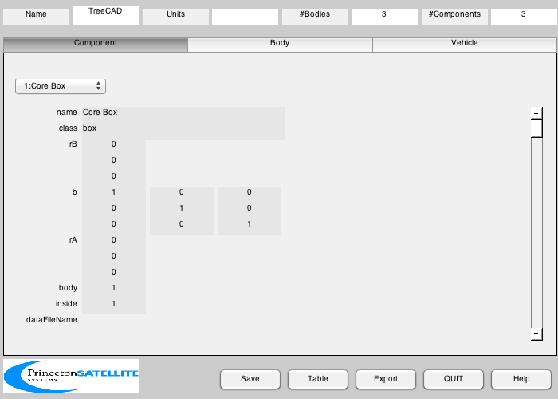 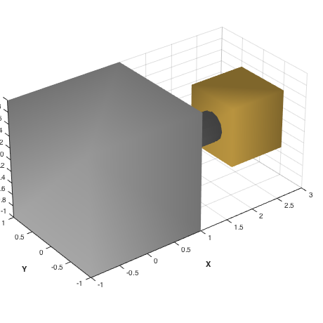
Simulate the model in a loop
body = TreeBldCAD( g );
body(2).torque = 0.1;
r = [7000;0;0];
v = [0;sqrt(3.98600436e5/7000);0];
[treeDS, x] = TreeInit( body, r, v );
tSim = 20;
dTSim = 0.1;
nSim = floor(tSim/dTSim);
hPlot = zeros(1,nSim);
tPlot = zeros(1,nSim);
xPlot = zeros(length(x),nSim);
t = 0;
global simulationAction
simulationAction = ' ';
[ ratioRealTime, tToGoMem ] = TimeGUI( nSim, 0, [], 0, dTSim, 'Tree Sim' );
for k = 1:nSim
[ ratioRealTime, tToGoMem ] = TimeGUI( nSim, k, tToGoMem, ratioRealTime, dTSim );
hPlot(k) = Mag( TreeH( x, t, treeDS, body ) );
xPlot(:,k) = x;
tPlot(k) = t;
x = RK4( 'Tree', x, dTSim, t, treeDS, body );
t = t + dTSim;
g = TreeDraw( g, x, treeDS );
DrawSCPlanPlugIn( 'update', tag, g );
switch simulationAction
case 'pause'
pause
simulationAction = ' ';
case 'stop'
return;
case 'plot'
break;
end
end
TimeGUI( 'close' )
TreePlot( tPlot, xPlot, treeDS, body, hPlot )
Max Momentum Error = 1.7728e-04 Nms
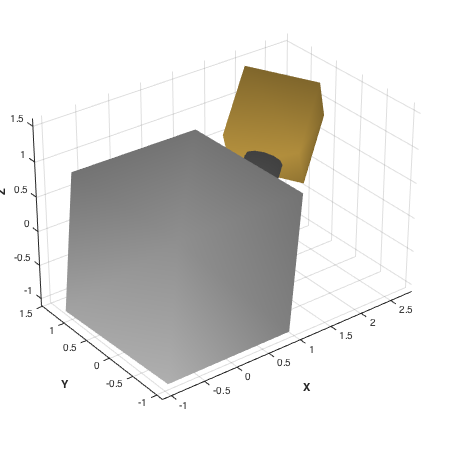 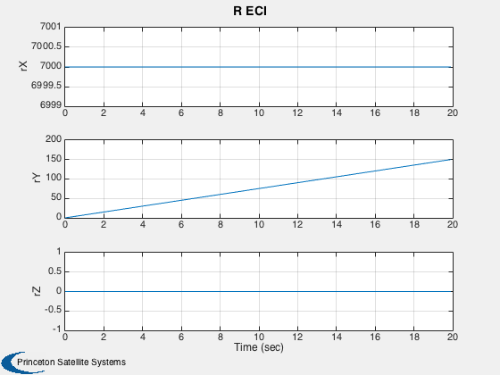 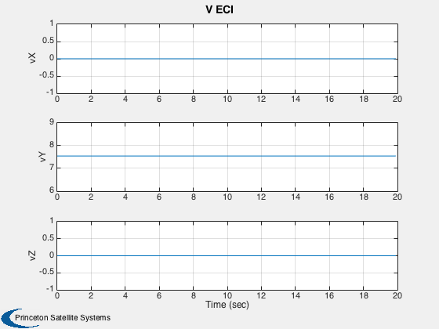 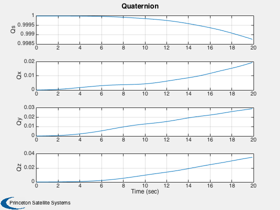 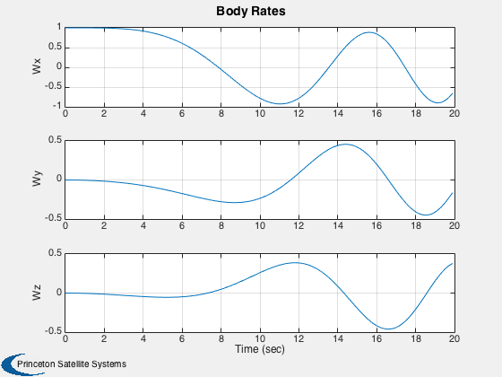 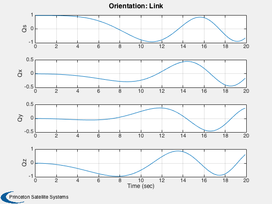 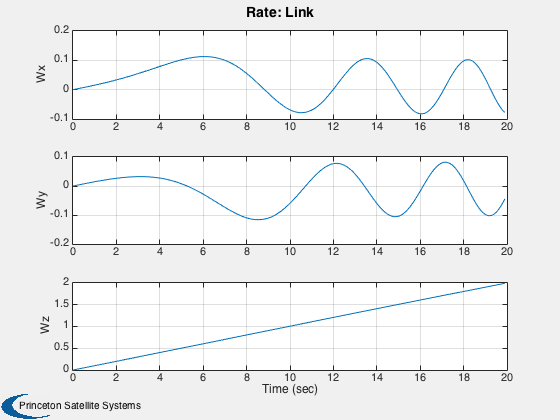 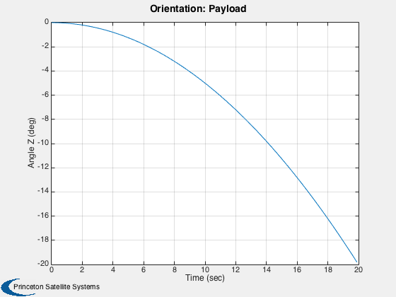 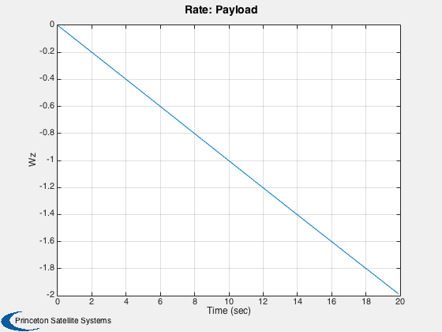 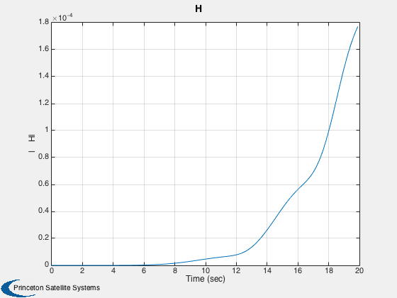